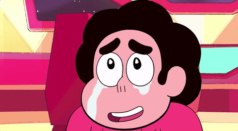
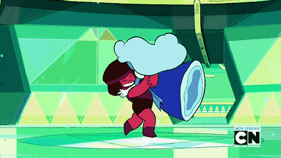
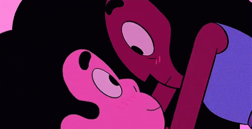
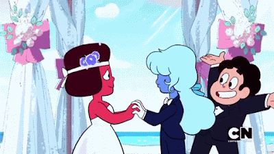
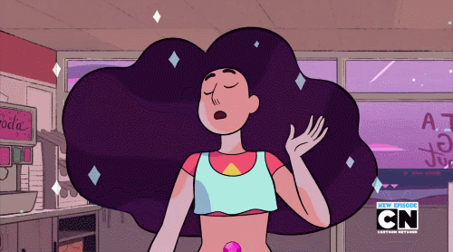
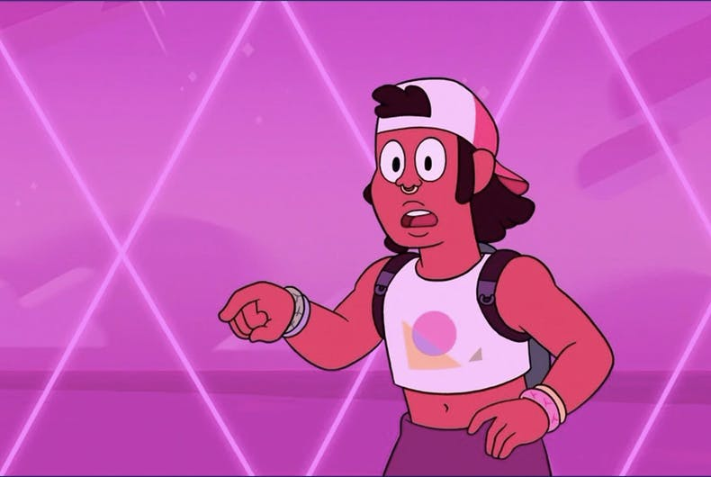

Steven universe é um dos meus desenhos favoritos e, com certeza, o desenho (ou mesmo mídia) que mais mudou a minha vida. Não é só um desenho lindo artisticamente e com músicas e enredo muito bons. Ele traz muitas lições e temas que me ensinaram a ver o mundo de outra forma e a aceitar melhor quem eu sou. Vou falar sobre alguns deles nesse texto.
⭐ Tá tudo bem ser sensível e sentimentos são lindos
Uma das lições mais importantes é sobre sentimentos. Steven é um menino diferente da maioria dos protagonistas de desenhos até então. Ele é muito sensível e mostram que tudo bem ser assim. Na verdade, a maior força dele é essa. A maioria dos conflitos são resolvidos com ele conseguindo conversar mesmo com quem acabou de machucar ele. E muitos dos antes inimigos, se tornam amigos.
Essa é uma mensagem incrível, principalmente pra meninos que estão crescendo, porque existe um estigma da sociedade machista em que homens não podem chorar ou mostrar sentimentos, que tá tudo bem com isso. Isso me ajudou muito quando mais nova (e até hoje) porque sempre fui uma pessoa mto sensível e reprimia isso. E a série ajudou muito a aceitar meus sentimentos e me aceitar como LGBT, principalmente como pessoa trans.
⭐ Amor e relacionamentos
Não dá pra falar de relacionamentos em SU sem falar da Garnet, ela é uma fusão de gems que escolheram ficar quase todo o tempo assim porque se amam. E é muito bonito ver isso porque a Garnet é literalmente um relacionamento ambulante. Porém, também é tratado o tema de como é importante respeitar a outra pessoa e ter seu espaço para ter um relacionamento saudável, pois mesmo elas se separam em um ponto da série.
O relacionamento de Steven e Connie também é bom de se citar aqui, pois ele é o relacionamento entre dois humanos que mais tem foco. E sendo humanos e não gems, provavelmente são os que mais entram em conflito e problemas, porém é mostrado como eles aprendem a respeitar um ao outro e superar tudo.
Através do relacionamento de Lápis e Jasper, também é tratado o tema de dependência emocional e relacionamento abusivo. É mostrado todo o processo para elas saírem dele e os efeitos disso tudo.

⭐ Representatividade
Steven Universe também é um desenho que tem muita representatividade LGBTQIA+ e foi o primeiro desenho a ter um casamento entre duas mulheres (Rubi e Safira), abrindo caminho para mais desenhos conseguirem trazer representatividade depois dele.
Tambem temos ume personagem intersexual e não binárie! Elu é Stevonnie, a fusão entre Steven e Connie.
Mais tarde na série aparece Shep, outre personagem não-binárie. Elu namora a personagem Sadie.
⭐ Lidando com trauma
Em Steven Universe Future, que é o final da série um dos temas principais é o trauma e PTSD(Transtorno de Estresse Pós-Traumático) que Steven contrai após todos os acontecimentos da série e é mostrado desde os sintomas disso até como ele consegue finalmente lidar com isso, abrindo o debate sobre saúde mental.